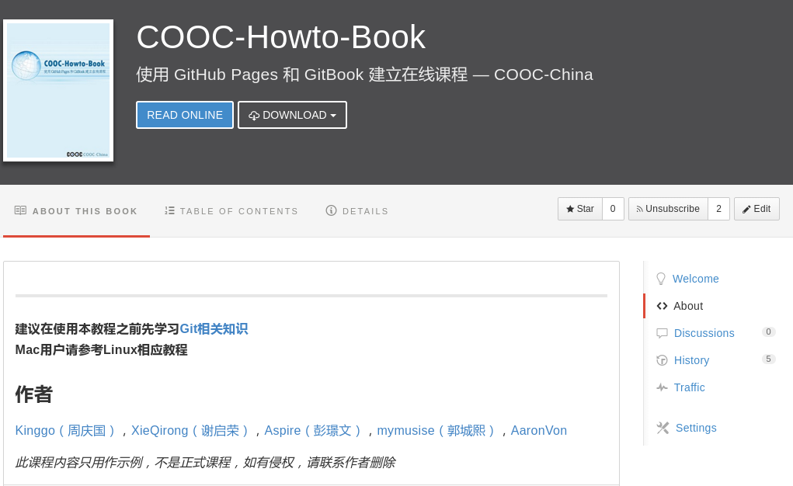

精选课程
使用 GitHub Pages 和 GitBook 建立在线课程
课程简介
GitHub是当今最流行的开源协作平台，GitBook是非常受欢迎的创作开源图书的平台，那么这两个工具能和教育碰撞出什么样的火花呢？
学习完本课程你能掌握：
• 如何使用 GitHub Pages 功能建立课程网站
• 如何使用 GitBook 创建及发布图书。

GitHub是当今最流行的开源协作平台，GitBook是非常受欢迎的创作开源图书的平台，那么这两个工具能和教育碰撞出什么样的火花呢？
学习完本课程你能掌握：
